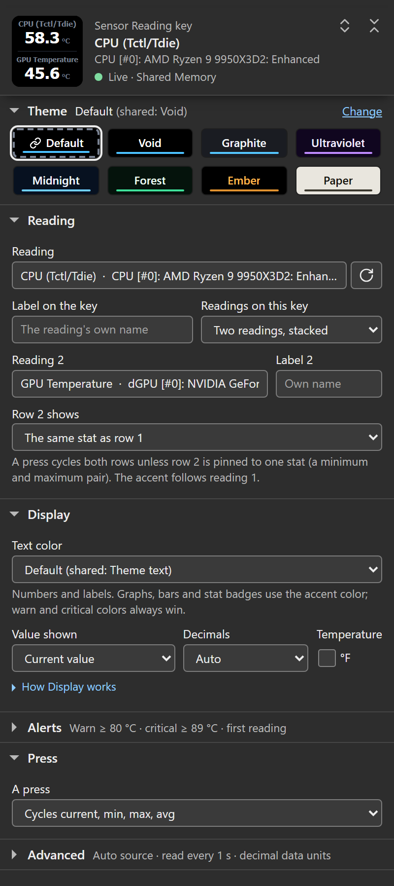
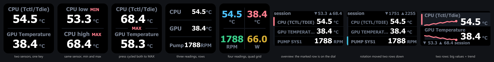
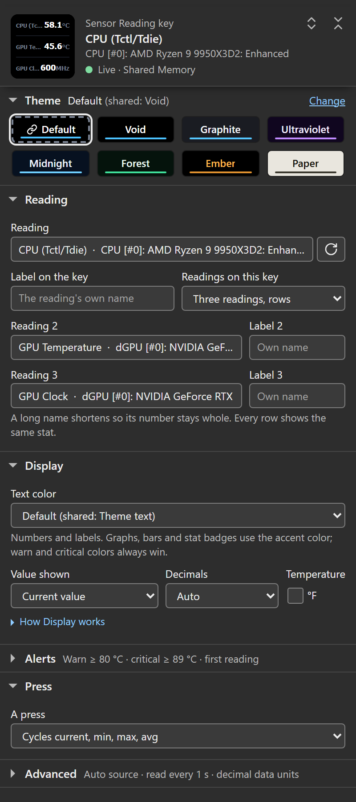
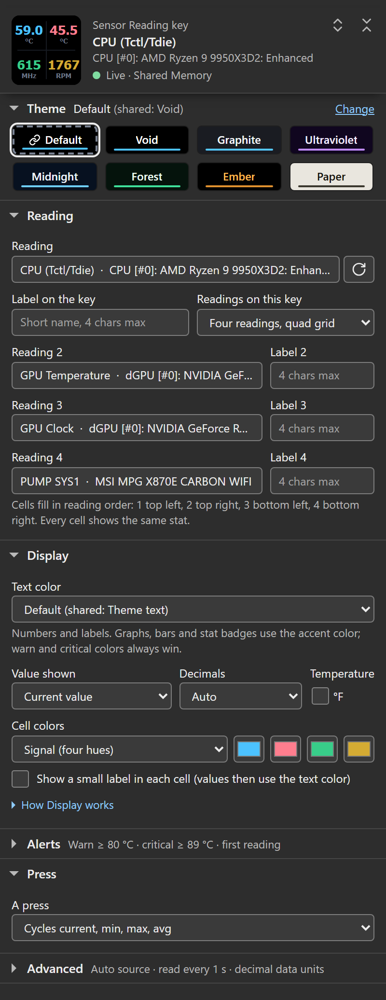
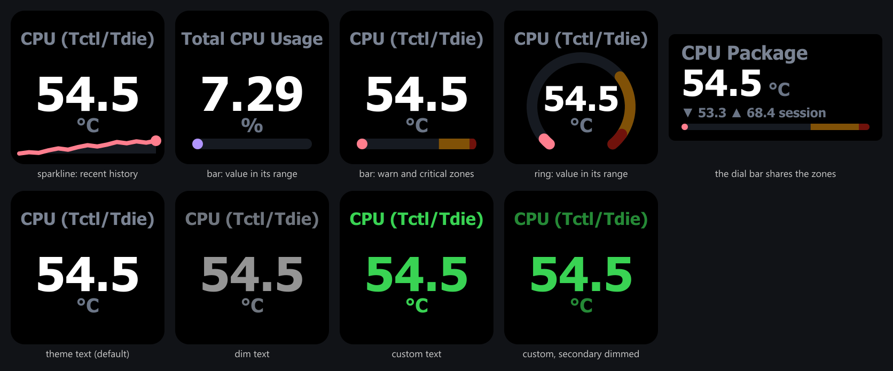
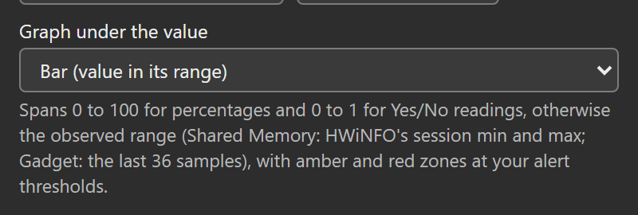

The Sensor Reading action puts a live HWiNFO reading on a Stream Deck key: a value, its unit, a custom label, an optional sparkline, bar, or ring display, and warn/critical coloring. A key can also stack two readings as two compact rows, show three readings as rows, or show four readings in a quad grid. Drag HWiNFO Sensors → Sensor Reading onto a key and pick a reading to start.
Choose one to four readings per key. Each layout has fixed positions for its labels, values and units.
This page describes 1.7. See what changed from 1.6.
This page documents every setting in the key’s settings panel. For the Stream Deck + dial, see Sensor Dial.
![The whole Sensor Reading settings panel with every section open: the header with the key's live face and state, the theme strip under it, then Reading (the reading, its label and Readings on this key), Display (Text color, Value shown, Decimals, the °F box and the graph), Alerts (Warn at 80, Critical at 89 and the drop checkbox), Press (the A press select), and Advanced with its four groups open (Shared defaults and Connection, each marked All keys and dials, Support, and the Configuration documents with their Copy and Replace buttons).](./assets/img/settings-panel.png)
Settings
The header at the top of the panel shows the key’s face exactly as the plugin last drew it on the device (a change you make shows there when the key repaints), the reading’s name and sensor, and the state of its data, for example Live · Shared Memory, Not updating for 42 s or No HWiNFO data. It stays at the top while you scroll, unless it would take more than a third of the panel’s height. When the data or the saved reading needs attention, a message under the header says what is wrong and offers the fix (see Status screens).
Next comes the theme strip, open on a first visit and folding like the sections, then five sections: Reading and Display open, Alerts, Press and Advanced folded. A folded section’s title line says what it currently does, for example Warn ≥ 80 °C · critical ≥ 90 °C; the line steps aside while the section is open. Longer explanations sit behind the How Display works and How the detail view works links. Open all sections and Fold all sections, the two chevron buttons at the top right of the header, open or fold every section at once; Alt-click on a section title does the same. A section you open or fold stays that way on the next key’s panel while the plugin runs; restarting the Stream Deck app shows the defaults again. Folding writes nothing to your keys.
Reading
The Reading box in the Reading section searches every reading HWiNFO publishes (typically 500+), grouped by sensor (CPU, GPU, drives, network, and so on), and every match is listed. Type part of a reading or sensor name to filter; each row shows its value when the list loaded, so you can confirm you have the right one. Arrow keys browse without changing anything, Enter picks the highlighted reading, and Tab, a click elsewhere, or a second click in the box before you type closes the list and puts your saved reading back. The Stream Deck app keeps the Escape key for itself, so it does not reach the panel. The circular-arrow button beside the box (Reload the sensor list) reloads the list if HWiNFO’s sensor set changed.
The selected sensor is stored as HWiNFO’s stable sensor-id : instance : reading-id identity (on the Gadget registry, which carries no ids, as the source name and reading label HWiNFO writes), not a list position, so keys survive HWiNFO restarts and sensor reordering. If that identity later disappears from HWiNFO’s output (a hardware, driver, or sensor-profile change, or a rename in HWiNFO while on the Gadget source), the key shows Sensor missing / pick again and the panel says Saved reading not found. The reading stays saved with its label and look, and returns by itself if HWiNFO publishes it again; pick another reading to replace it. When HWiNFO is not running at all, the panel says so instead and never calls your reading missing.
Note: With the picker open, pressing Enter with no search text typed does not change your selection (fixed in 1.1.5.0). Your saved sensor is left untouched.
Label on the key
Custom text for the key. Leave it blank to use the sensor’s own (HWiNFO-renamed) label. Labels size themselves to the key: a short name like CCD1 renders large, a longer one steps down through smaller sizes, and only a name too wide for the smallest size is truncated with an ellipsis. A stat badge (MIN / MAX / AVG) sits in its own gap under the label, so it never costs the label any width.
Theme
The theme strip sits right under the header (below any status message), above the sections, and opens on a first visit: Default and the seven presets, Void (default), Graphite, Ultraviolet, Midnight, Forest, Ember and Paper, each a chip drawn in its own colors with its name written on it. The line above the chips says what the key draws and where it comes from: Default (shared: Void) with Change beside it, which opens Advanced → Shared defaults at its Theme select, or for example Ember (set on this key). When the key’s own theme differs from the shared one, Make shared takes Change’s place: it makes that theme the shared theme and sets the key back to Default, so it keeps drawing the same colors. Fold the strip like a section and its line keeps the checked theme as a small chip in that theme’s colors, beside where it comes from; on a key with no reading the folded line also keeps Shows on the key once a reading is picked. The line does not change when you point at a chip, because every chip carries its own name. Pick one to theme this key only, or pick Default to follow the shared theme set under Advanced → Shared defaults → Theme, which every HWiNFO key and dial on every Stream Deck follows when set to Default.
Precedence: a per-key theme always wins; the shared theme only affects keys set to Default. The Default chip has a dashed frame and a link mark in front of its name, which tell it apart from the preset it currently draws, and a key’s own theme is kept when the shared one changes. On a key with no reading yet, a line under the strip says the theme shows once a reading is picked. See Themes for the full palette and type-accent details.
Text color
How bright the key’s text draws, first in the Display section:
- Default (default): follows the shared Text color under Advanced → Shared defaults; the option names what that currently is.
- Theme text: the selected theme’s own text colors, bypassing a shared Dimmed or Custom.
- Dimmed: a lower-intensity version of the theme’s text, for dark rooms and light-sensitive eyes.
- Custom color: your exact color. Two extra controls appear: Custom text color (the main value uses it exactly as picked; its hex code shows beside it) and Dim labels, units and stats (secondary text takes the same hue at lower intensity; untick it to paint every textual element the exact color).
Text color paints the numbers and labels. The accent (sparkline, bar, ring and stat badge) comes from the theme or, with Accent colors set to By sensor type, from the sensor’s type, so turning accents on never recolors a number.
The setting recolors text only: backgrounds, accents, sparklines, bars and rings keep their theme colors, and a warn or critical alert always overrides it. Existing keys keep their current look until you change the setting. Details on Themes.
Value shown (stat mode)
What the key displays, drawn from HWiNFO’s own statistics since it started:
| Option | Shows |
|---|---|
| Current value (default) | The live reading. |
| Minimum | Lowest value HWiNFO has recorded since it started. |
| Maximum | Highest value HWiNFO has recorded since it started. |
| Average | Running average HWiNFO has computed since it started. |
When a non-current mode is selected, a small MIN / MAX / AVG badge appears in a gap between the label and the value, centered on the key, so the label keeps its full width.
Note: Min / max / average come from HWiNFO’s Shared Memory interface. On the Gadget-registry fallback these statistics aren’t available, so historical modes show N/A with an empty value. See Data sources.
Layout: two readings on one key
Readings on this key → Two readings, stacked splits the key into two rows, each with its own small label and a value with the unit inline, separated by a thin divider. Pick the second reading in the Reading 2 box that appears right under the choice (same searchable list as the first), and give it an optional Label 2. Until Reading 2 holds a pick, the key keeps drawing one reading and a note under Readings on this key says so. While the layout is dual, Graph under the value hides.
Row 2 shows decides the second row’s stat:
- The same stat as row 1 (default): both rows show the same stat, and the key press cycles them together. When that stat isn’t the current value, one MIN / MAX / AVG badge sits centered in the divider gap, the key’s most visible spot.
- Always the current value / minimum / maximum / average: pins the second row to a fixed stat, and the key press then cycles row 1 alone. Each row that isn’t showing the current value names its stat in a small badge after its own label (for example CCD2 MAX), so both values keep their full size and their place on every press. When a label is too long to keep its size beside the badge, that row’s badge follows its value instead, as in 1.6.0, and the label stays whole. Two rows pinned to the same stat share one badge in the divider gap.


Two stacked rows are this layout’s limit; for more, the three-row layout trades the big stacked values for three compact rows, and the quad grid shows four readings per key, which is the ceiling. Some useful pairs:
- Two related sensors: CPU and GPU temperature, both RAM sticks, two drives.
- The same sensor twice with a pinned second stat: current above a pinned maximum, or Value shown = Minimum with Row 2 shows = Always the maximum for the min/max pair in the image above (framerate lows and highs work the same way).
- A download/upload rate pair for one adapter.
What carries over, and what stays with the first reading:
- Decimals and °F apply to both rows.
- Warn at / Critical at watch the first reading only, and an alert recolors the whole key exactly like the single layout. There are no per-row thresholds; put the reading you want alerts on first (or use two keys).
- The sensor-type accent (badge color) follows the first reading.
- The Display strip is a single-layout feature: the second row takes its space, so Graph under the value hides while the layout is dual (the setting is kept for when you switch back).
- Row labels size themselves like the single layout’s label. A pinned row’s stat badge shares its label line only while the label keeps its size there; otherwise the badge follows the value.
- If one row’s sensor drops out of HWiNFO’s output, that row shows an em-dash placeholder while the other keeps updating; if both drop out, the key shows the usual Sensor missing screen.
Switching back to One reading restores the exact single-layout face; the second reading’s settings are remembered.
Layout: three readings, rows
Readings on this key → Three readings, rows shows three compact horizontal rows: the label on the left, the value with its unit aligned on the right, separated by thin rules. It reads like a small table (CCD1, CCD2 and the core maximum of a 9950X3D fit on one key). The first row is the key’s own sensor, the Reading 2 and Reading 3 boxes fill the other two, each with an optional label. The third slot is the same field the quad grid uses, so switching between three and four readings keeps every pick; a triple needs the first sensor plus at least one more, and an unpicked row stays empty.
Each row’s label gets the space its own value leaves over, sizing itself like the other layouts’ labels. Values keep one shared size per key so they read as a column.

What carries over, and what stays with the first sensor:
- All rows show the same stat, and pressing the key cycles them together; a non-current stat shows one MIN / MAX / AVG badge on the first separator. Per-row stat pins are a dual-layout feature.
- Decimals and °F apply to every row.
- Warn at / Critical at watch the first sensor only, and an alert recolors the whole key in the global alert palette, exactly like the other layouts.
- The sensor-type accent follows the first sensor, and the Display strip stays a single-layout feature.
- A row whose sensor drops out of HWiNFO’s output shows an em-dash placeholder while the rest keep updating; if every picked sensor drops out, the key shows the usual Sensor missing screen.
Switching to another layout keeps all three sensors and labels; switching back to One reading restores the exact single-layout face.
Layout: four readings, the quad grid
Readings on this key → Four readings, quad grid splits the key into a 2x2 grid, one reading per cell, behind a hairline cross. The first reading is the top left cell and Reading 2 the top right (the same fields the stacked layout uses, so switching between two and four readings keeps both sensors), with Reading 3 and Reading 4 below. A quad needs the first sensor plus at least one more; unpicked cells stay empty, so a three-sensor quad is fine.
Four values on a 72 px key leave no room for full labels, so the quad has two ways to keep the cells identifiable:
- Cell colors (in the Display section) (default): each value is drawn in its cell’s color. The preset select offers Signal (four distinct hues), Pairs (top row one hue, bottom row another, for two related pairs), and Uniform (accent blue everywhere); the four color wells beside it recolor any single cell, and the select reads Custom when the wells match no preset.
- Cell labels: ticking Show a small label in each cell switches to a short uppercase label above each value; the label takes the cell color and the value the theme’s text color. Labels come from Label on the key and Label 2 for the top cells and Label 3 / Label 4 for the bottom ones, defaulting to the sensor name’s first word; the first 4 characters show.
Values compact to at most four characters per cell: decimals drop first, then large numbers shorten (48700 shows as 49k), so a cell never overflows.

What carries over from the other layouts, and what stays with the first sensor:
- All cells show the same stat, and pressing the key cycles them together; a non-current stat shows one MIN / MAX / AVG badge centered on the cross. Per-cell stat pins are a dual-layout feature.
- Decimals and °F apply to every cell.
- Warn at / Critical at watch the first sensor only, and an alert recolors the whole key in the global alert palette, over the cell colors, exactly like the other layouts; an alert is always the whole field, never one cell’s color.
- The sensor-type accent (badge color) follows the first sensor, and the Display strip stays a single-layout feature.
- A cell whose sensor drops out of HWiNFO’s output shows an em-dash placeholder while the rest keep updating; if every picked sensor drops out, the key shows the usual Sensor missing screen.
Switching back to One reading, Two readings, stacked or Three readings, rows restores that exact face; the extra sensors, labels and colors are remembered for the next switch to quad.
Decimals
Controls value precision:
- Auto (default): scales precision with magnitude and compacts large numbers through k, M, G and T so they never overflow the key (
48700→48.7k,48700000→48.7M): ≥ 100 shows 0 decimals; ≥ 10 shows 1; below 10 shows 2, at every tier. - 0 / 1 / 2 / 3: a fixed number of decimal places.
Byte quantities and transfer rates scale by their real units instead of the generic ladder; see Data units.
Temperature unit
The °F box (under Temperature in Display, next to Decimals) converts °C readings to Fahrenheit for display. It only affects readings whose unit is °C; every other unit is left as HWiNFO reports it. Thresholds and the Display strip follow the displayed unit; see the notes below.
Display: sparkline, bar, ring
The Graph under the value select in the Display section picks one strip under the value. It shows only on the one-reading layout:
- None (default): just the value.
- Sparkline (recent history): a filled line of the reading’s recent values along the bottom of the key, tinted with the key’s accent (or its sensor-type accent).
- Bar (value in its range): a horizontal gauge in the sparkline’s spot showing where the live value sits in its range.
- Ring (value in its range): the same gauge as a radial arc around the value.


Bar and Ring find their range automatically:
- Percentages (and duty cycles) run 0 to 100.
- Yes/No readings run 0 to 1. The key shows the word HWiNFO shows, Yes or No; a threshold compares the 0 or 1 behind it.
- Everything else spans the values actually seen. On Shared Memory that is HWiNFO’s session min/max plus the plugin’s own recent samples. Gadget has no min/max, so there the range follows a moving window of the last 36 samples and starts again after a gap. There are no manual bounds to type.
- Warn at / Critical at draw amber and red zones that escalate toward the alarmed end: amber then red at the high side normally, mirrored to the low side when the alert is set to fire on a drop, the classic instrument convention (a fuel gauge is red at empty, a tachometer at the top). The range widens to keep the zones visible.
The zones are fixed landmarks, drawn as muted shades so they read as markers, not state; the moving fill is the live value, and it keeps its full color (accent normally, amber/red while alerting) over them. The gauge follows the live value even while the key’s text shows MIN, MAX, or AVG, exactly like alert coloring. The dual, triple and quad layouts have no strip, so Graph under the value hides there.
Sparkline notes:
- It holds the last 36 samples. Since 1.7, its history buffer accepts subsecond value changes and advancing producer timestamps. Repeated held frames do not add points. The collection rate depends on HWiNFO and the plugin’s poll interval.
- Collection continues for subscribed readings while any Sensor Reading key or Sensor Dial is visible. With none visible, polling stops and samples stay in memory. Returning can append to them; the line is spaced by samples and does not measure that pause.
- A skipped read, missing or non-finite reading, stale data, source transition or native-unit/type change clears the affected segment. A poll-interval change clears all segments; a pairing edit clears only a segment whose saved key now stands for a different measurement. Restarting the plugin also clears history. See collection rules.
- It survives a °C/°F toggle unchanged (same data, just relabelled), and a frozen HWiNFO holds the line’s last real shape instead of flattening it.
- The sparkline self-scales to its own visible min/max, so the shape reflects recent variation, not absolute magnitude.
Note: Changing the poll interval (Advanced → Connection → Read every) resets sparkline history, because the history buffer is spaced by sample index and does not preserve elapsed time across a cadence change. Keys configured before 1.2.x keep their old Sparkline checkbox behavior until you touch the Graph under the value select.
Warn at / Critical at
Use the displayed temperature unit; byte and rate thresholds use the native value before Data units re-tiers it. When the live value crosses Warn at, the whole key flips to an amber field with black text; at Critical at, a red field with white text (aviation-style master caution/warning). These two alert palettes are global and never tinted per theme, so warn and critical look the same on every theme. Leave a field blank to disable it. Decimal commas are accepted (70,5 works as 70.5); text that is not a number is kept as typed and flagged under the field (Not a number. Alerts ignore this field until it is one.), and alerts ignore it. The folded Alerts section reads back what is in force, with the comparison the key really uses, for example Warn ≥ 80 °C · critical ≥ 90 °C; on a key that draws two or more readings it ends in first reading.
See Thresholds & alerts for the full behavior.
Note: Warn/critical always track the live value, even when the key is showing MIN, MAX, or AVG. The stat mode changes what number you see; it never changes what triggers the alert.
Direction
Alert when the value drops to or below these numbers (for fans and clocks) flips the comparison so lower is worse. Use it for readings where a low number is the problem: fan RPM, free disk space, remaining battery. With it off (default), higher is worse (temperatures, power, load).
Pressing the key
By default, pressing the key cycles the displayed stat: current → MIN → MAX → AVG → current. The badge under the label updates to match, and the choice is saved back to the key’s settings (so it’s the same as changing Value shown in the panel). Warn/critical coloring keeps tracking the live value throughout.
On a dual key with Row 2 shows at its default (the same stat as row 1), the press cycles both rows together, one shared badge centered on the divider. A second row pinned to a fixed stat stays put while the first row cycles, so a configured pair (say a pinned maximum under a live value) survives any press.
On a quad key every cell shows the same stat, so the press cycles all four together, with the one badge at the cross center updating.
A press can open details (drill-down)
The Press section’s A press select can repurpose the press instead. Its default, Cycles current, min, max, avg, is the cycle above. Opens sensor details switches the deck to a bundled detail view listing every reading from this reading’s sensor, a custom list, or everything matching a glob filter (*4090* style, with a live match count in the panel). Tap cycles; hold opens details keeps the stat cycle on a short tap and opens the view after holding half a second. Keys that never touch the Press section behave exactly as before. The whole feature has its own page: what the view shows, the one-time install prompt per deck type, and which decks are supported.
The detail view’s own Back tile is this same Sensor Reading action with one difference: its press is fixed to returning to the previous profile. Its panel says so in a note under the header, and its Press section holds that note in place of the press choices. Everything else here (the reading, layouts, theme, Text color, thresholds, Graph under the value) applies to it unchanged; see configuring the Back tile.
Status screens
If the key cannot show a reading, it shows a two-line status message:
| Key shows | Meaning / fix |
|---|---|
| Start HWiNFO / not detected | HWiNFO isn’t publishing to the selected data source (in Auto, to neither). Start it with Shared Memory Support (or Gadget reporting) enabled, or check Data source. |
| Source busy / retrying | The sensor source was busy or changed during a read. The plugin retries automatically on the next poll. |
| Shared Memory / is off | HWiNFO reports sharing disabled. Re-enable it in HWiNFO Settings. Auto can use Gadget when enabled; saved selections need explicit links to work across sources. |
| Not updating / check sharing | No new Shared Memory measurement evidence has been observed within the grace period. Check HWiNFO and Shared Memory Support; a busy connection can also prevent reads. |
| Age unknown / check Gadget | Gadget has no producer timestamp. Check HWiNFO and Gadget reporting; unchanged values can be steady or left by a kill or crash. |
| Tick sensors / in Gadget | The Gadget registry is present but has no readable sensor rows. In HWiNFO, open Configure Sensors and the HWiNFO Gadget tab; check Enable reporting to Gadget and tick the readings you need. |
| Access denied / open settings | Windows denied access needed to read the sensor source; the error does not identify which access rule failed. Open settings and choose Copy support report for support. Review the Windows account, session and privilege settings of HWiNFO and Stream Deck. |
| Pick a sensor / in settings | No sensor selected yet. Open the key’s settings. |
| Sensor missing / pick again | The saved sensor isn’t in HWiNFO’s current output. Pick it again. |
| Bridge failed / reinstall | The native HWiNFO bridge (bin/hwsm.node) could not load; this does not identify the cause. Reinstall the plugin from its release package. If Windows or security software reports a block, keep that report and the package hash for support. A checksum identifies bytes; it does not establish safety. |
| Needs x64 / Windows | This plugin needs 64-bit (x64) Windows. macOS and Windows-on-ARM are unsupported. |
| Source error / open settings | The sensor source could not be opened or validated. In Auto mode a Gadget failure shows this only while Shared Memory is not running. Open settings and choose Copy support report for support. |
While the key is in one of these states, the message under the panel’s header explains it and offers the fix it can: Check again and HWiNFO setup steps when HWiNFO data is unavailable (plus Data source setting when Data source is set to one provider only), Reload sensor list and Pick another reading when the saved reading is not found, and Check again when data stops updating. If Check again gets the same answer, a line under the buttons says when it checked, for example Checked again at 14:02:31: no change yet. Full details are on Status screens.
Advanced (shared by all keys and dials)
The Advanced section holds four groups that fold on their own, so opening Advanced shows four lines instead of one long block: Shared defaults and Connection, both marked All keys and dials because every HWiNFO key and dial on every Stream Deck shares them (Stream Deck stores them once for the whole plugin), then Support and Configuration documents. Shared defaults holds Theme, Text color, Text font, Accent colors and Data units; Connection holds Data source, Read every, the reading-links note and the HWiNFO setup steps; on a healthy Gadget source it also carries the plugin’s full note about that source, which the message under the header shortens to one line. Folded, Shared defaults and Connection name their current values on their title line, for example Auto source · read every 1 s. Themes and Text color are documented under Themes, the sources under Data sources.
![The Advanced section at the panel's real width with its four groups open: Shared defaults (marked All keys and dials) with Theme, Text color, Text font, Accent colors and Data units; Connection (marked All keys and dials) with Data source, Read every, the reading-links note and the folded HWiNFO setup steps; Support with the Copy support report button; and Configuration documents with the This key's settings well and the Shared settings well (marked All keys and dials), each with Copy and Replace, over the help line that explains them.](./assets/img/pi-live-key-advanced.png)
Configuration documents holds two JSON wells: This key’s settings, the exact settings this key runs on, and Shared settings, the plugin-wide settings. Copy fills an untouched well with the settings of the moment you press it and puts the document on the clipboard; save it to a file to back a hand-built layout up. Paste a saved document and press Replace this key’s settings to restore it, or to clone it onto another key here or on another machine. Replacing swaps the whole document in one write and reloads the panel; fields this build does not know survive untouched. Replace shared settings changes every HWiNFO key and dial, so its first press only arms it (the button then reads Press again to replace for all keys and dials) and a second press replaces; a quick double click only arms it, and leaving the button or editing the document disarms it. Reading keys in the document carry the sensor’s friendly name after the key so the file stays readable; replacing strips the names, and settings always store bare keys. The wells live on the Sensor Reading and Sensor Dial panels only; the HWiNFO Control key holds just a command, a target and a reset scope, so it has no wells; re-enter those by hand.
Data units decides how byte quantities and transfer rates read, everywhere at once:
- Decimal (default): bytes in B / KB / MB / GB / TB (steps of 1000) and rates as bits: bps / kbps / Mbps / Gbps / Tbps (byte rates multiply by 8), so
12000000 B/sreads 96.0 Mbps. - Binary: bytes in B / KiB / MiB / GiB / TiB (steps of 1024) and rates as bytes: B/s through TiB/s (bit rates divide by 8), so the same reading reads 11.4 MiB/s.
The value is converted whenever the label changes; a 12345.6 MB reading shows as 12.3 GB in Decimal and 11.5 GiB in Binary, never as a relabeled raw number. This is display only: Warn at, Critical at, and the dial’s bar range keep working against the number HWiNFO reports (the displayed unit before this re-tiering), exactly as before.